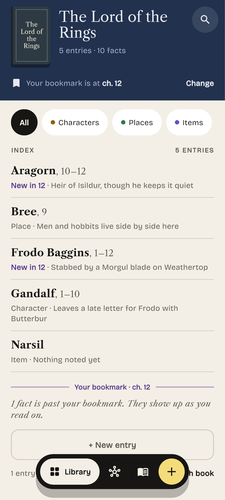

New in 12 · Heir of Isildur, though he keeps it quiet
Place · Men and hobbits live side by side here
New in 12 · Stabbed by a Morgul blade on Weathertop
Character · Leaves a late letter for Frodo with Butterbur
Item · Nothing noted yet